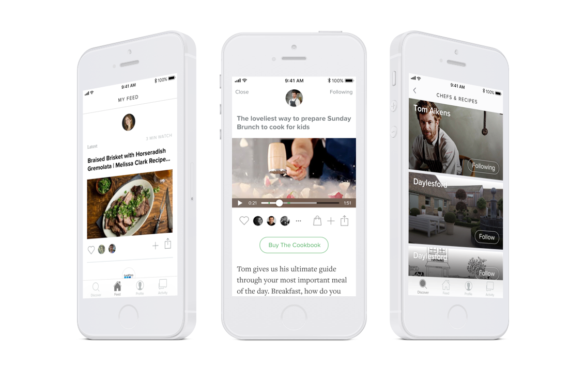
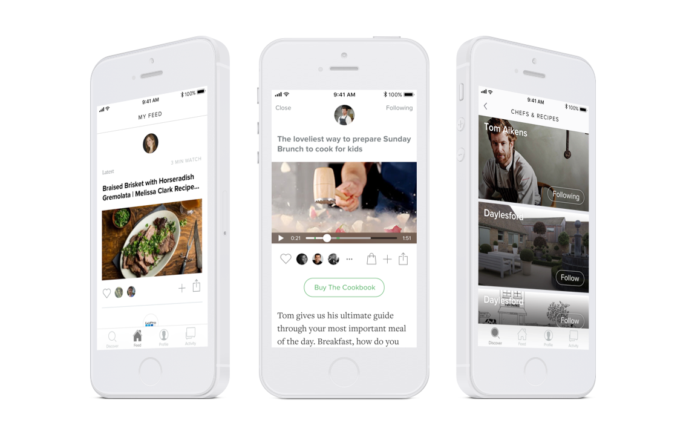

Robin
2015—2016 with Michael Willmott

Robin is a workplace training application. It was built from the ground up to offer a supportive learning culture for members onboarding a new company. Focus on delivering an enjoyable experience around the vast amount of expensive content already existing within organisations and maximizing on its impact by offering features like engagement stats and a liking system to sustain a feedback loop to management and questions to guage value output from individual team members.


 
